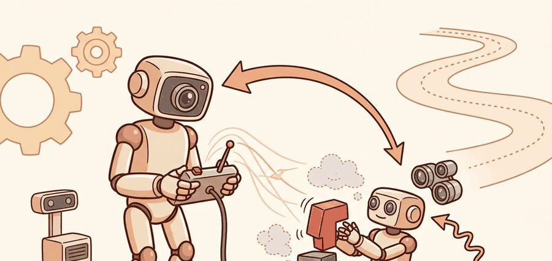
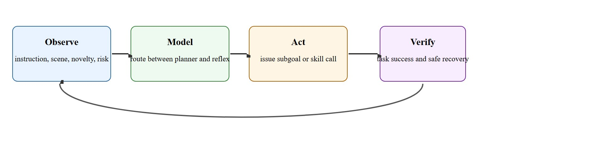

"Foundation models matter for humanoids only when they know when to think and when to stay out of the way."
A Dual-System Architecture Review

This section assumes familiarity with robot foundation models and cross-embodiment pretraining from section 35.1, and with the skills hierarchy introduced in section 26.1. The dual-system routing pattern developed here is extended in section 55.2, which covers deployment monitoring and safe handoff between planning and execution layers in production humanoid systems.
A humanoid is asked to hand a colleague a coffee mug. The arm reaches, the fingers close, the whole body shifts weight to stay balanced. None of that requires thought. But the robot notices the mug is near the edge and the colleague is distracted. That does require thought, and it must happen without freezing the arm mid-reach. This split, fast embodied execution running in parallel with slow deliberate reasoning, is the core architectural challenge of dual-system humanoid foundation models. Chapter 35 showed how foundation models encode rich priors; here you will learn to wire those priors into a whole-body stack through a routing contract that keeps both systems honest, safe, and synchronized.
Route a single wrist torque through a 7 Hz language model and a 70 kg humanoid falls over: the stale-command gap alone exceeds the balance loop's tolerance by an order of magnitude. (The "stale-command gap" here is simply the time between when the language model computes a torque value and when that value actually reaches the joint, roughly 140 ms at 7 Hz, during which the robot's real balance state has already changed.) That failure is the whole story of dual-system design in one sentence. It forces a clean contract between a slow deliberative layer and a fast whole-body execution layer. A routing variable $g_t \in \{\text{reflex}, \text{deliberative}\}$ summarizes a dual-system controller: it selects whether the next command comes from a fast local policy or a slower planner. In practice, $g_t$ depends on novelty, ambiguity, safety state, and latency budget.
The key systems contract is that the slow model proposes subgoals, contact-relevant intentions, or skill calls, while the fast whole-body layer ensures balance, timing, and force feasibility. If the slow model directly emits time-critical whole-body commands, the architecture usually collapses under latency and contact uncertainty.
A common misconception is that the foundation model (slow, deliberative system) is the primary intelligence and the fast reflex layer is a secondary execution detail. This is wrong in the embodied AI context: the reflex layer runs continuously at 200 Hz or more and handles every safety-critical computation including balance, contact forces, and joint limits. The foundation model intervenes only occasionally, for seconds at a time, when semantic novelty or ambiguity requires it. The correct mental model is that the fast layer is the permanent load-bearing structure and the foundation model is a selective advisor that must never interrupt or degrade the structure it depends on to stay upright.
The value of a humanoid foundation model is not raw eloquence. It is making better task decisions without destabilizing the fast embodied loop.
Figure 46.6.1 frames this contract as a loop: observe the instruction and scene, route between planner and reflex, act by issuing a subgoal or skill call, then verify both task success and safe recovery before observing again.

Before looking at how the routing gate is tuned in practice, it helps to fix the vocabulary the slow layer actually emits, since the worked examples below (routing traces, the gate step-through, and the Helix case study) all assume this typed-action contract is already in place.
Humanoid foundation models are most credible when they operate over typed actions or skills rather than raw torque streams. The fast motor layer already has strong geometric and dynamic structure. The slow layer helps with task decomposition, semantic grounding, memory use, and exception handling.
This typed interface has direct physical consequences. Humanoid joints obey strict dynamic constraints: bandwidth limits, torque saturation, and millisecond-scale contact timing. A slow model that emits free-form text or raw joint targets forces the execution layer to interpret semantics under real-time pressure, which squeezes safety margins and makes fault attribution nearly impossible when the robot falls or drops an object.
In practice, typing works by defining a finite vocabulary of parameterized skill calls, such as grasp(object_id, approach_axis) or place(target_pose, contact_threshold), with explicit preconditions and postconditions. The slow model selects and fills one of these templates; the fast layer validates the parameters against current sensor state before executing. This contract separates semantic correctness (the slow model's responsibility) from physical feasibility (the fast layer's responsibility).
So far: the slow layer must speak in typed, parameterized skill calls (not raw torque) because the fast layer's millisecond-scale timing constraints leave no room to interpret free-form commands, and this typing is what lets the fast layer validate feasibility before it ever executes anything.
Think of a head chef calling out "table four, salmon, medium, no garlic" to a line cook. The chef does not reach over and adjust the burner flame or time each flip of the fish. The order is a typed instruction: a named dish, a named table, a named preparation. The line cook, who has trained hands and immediate sensory feedback, translates that into every split-second physical action. If the chef tried to narrate each wrist motion in real time, the cook would freeze waiting for the next word while the salmon burned. Typed skill calls work the same way: the slow model names what to do and the fast layer decides exactly how, moment by moment, without waiting for further instructions.
This makes evaluation more specific. The right questions are whether the model chooses the correct skill, times handoff correctly, asks for clarification when needed, and improves recovery under novelty. The wrong question is whether it can narrate the task nicely.
A clean architecture also exposes failure provenance. Was the error in grounding, planning, skill selection, or low-level execution? Without that separation, whole-body foundation models become impossible to debug.
A routing trace can tell you whether the foundation model improved behavior by choosing better skills or merely talked over a controller that already knew what to do.
events = [
{"t": 0.0, "route": "reflex", "reason": "stable walk"},
{"t": 3.2, "route": "planner", "reason": "instruction correction"},
{"t": 4.1, "route": "reflex", "reason": "skill selected"},
]
planner_calls = sum(1 for e in events if e["route"] == "planner")
print({"planner_calls": planner_calls, "events": events})Expected output interpretation. The planner intervened only when the task semantics changed. That is the desired pattern. Constant planner involvement in stable locomotion would usually signal a bad system split.
Trace the gate $g_t$ over four control ticks with a confidence threshold $\tau = 0.6$ and a minimum inter-planner interval of $0.5$ s. The gate fires the planner only when confidence drops below $\tau$ AND at least $0.5$ s has elapsed since the last planner call.
t = 0.0 s, confidence $= 0.91$, last planner call: never. Confidence $0.91 \ge 0.60$, so the novelty condition fails. Route = reflex (stable walk).
t = 0.2 s, confidence $= 0.48$, last planner call: never. Confidence $0.48 < 0.60$ fires novelty, and elapsed time is unbounded, so the interval floor passes. Route = planner; record last_planner_t $= 0.2$.
t = 0.45 s, confidence $= 0.41$, last planner call: $0.2$ s ago. Confidence is low, but elapsed $= 0.45 - 0.20 = 0.25$ s $< 0.5$ s, so the interval floor blocks it. Route = reflex (suppressed re-fire).
t = 0.8 s, confidence $= 0.44$, last planner call: $0.6$ s ago. Confidence is low and elapsed $= 0.8 - 0.2 = 0.6$ s $\ge 0.5$ s, so both conditions pass. Route = planner; record last_planner_t $= 0.8$.
Result over the four ticks: planner_calls $= 2$, and the noisy dip at $t = 0.45$ s was correctly absorbed by the reflex layer instead of stalling the fast loop.
When tuning the routing gate, set an explicit minimum inter-planner interval (a hard floor such as 0.5 s) in addition to the novelty threshold. Without it, small perception noise can trigger repeated planner calls at near-reflex frequency, stalling the fast loop without adding semantic value. In GR00T N1 and similar dual-system architectures (GR00T N1 is NVIDIA's open humanoid foundation model, pairing a slow vision-language reasoning module with a fast diffusion-based action module), the routing variable $g_t$ is gated by both a confidence score below a threshold and a minimum elapsed time since the last planner invocation, so a momentary drop in perception confidence during stable locomotion does not fire the slow layer unnecessarily. Log the inter-planner interval histogram during integration testing: a median below your skill execution horizon (typically 0.5 to 2 s) is a reliable early warning that the gate is miscalibrated.
Take Figure AI's Helix system as of early 2025. The Vision-Language-Action (VLA) slow layer runs at roughly 7 Hz and emits typed "grasp object X at pose Y" subgoals. The whole-body stabilizer runs at 200 Hz and handles balance and contact forces. When a human hands the robot an unexpected item mid-task, the slow layer spends about 140 ms re-planning a revised subgoal sequence, and the fast layer holds postural stability throughout that window. This separation also unlocks a striking sample-efficiency gain from cross-embodiment pretraining (see Chapter 35): adapting the slow VLA layer to a new humanoid platform typically requires on the order of a few hundred task demonstrations in reported cross-embodiment results, whereas training an equivalent controller from scratch on that platform alone typically requires 50,000 or more episodes. If the slow layer instead tried to emit joint torques at 7 Hz, the resulting stale-command gap (roughly 140 ms, matching the figure above) would typically cause a contact instability on a 70 kg humanoid, because balance correction generally requires a closed-loop bandwidth above 50 Hz. The key metric is not planner quality in isolation but whether the handoff latency budget is satisfied: slow layer latency must stay below the skill execution horizon (typically 0.5 to 2 s), never below the balance bandwidth (10 to 50 Hz).
Use VLA or planning stacks for typed subgoals, but keep the execution layer grounded in concrete tools such as Isaac Lab for simulation, ROS 2 for skill routing and logs, Drake for model-based checks, and Hugging Face LeRobot or related robot-data tooling for behavior traces. The whole-body layer should remain inspectable rather than dissolving into end-to-end textual wishfulness.
A dual-system label is meaningless if the slow model still emits latency-sensitive motor detail that belongs in the reflex layer. A documented instance of this in practice: early whole-body VLA prototypes that routed wrist torque targets through the language model incurred 80 to 200 ms round-trip latency on every contact event. Because contact forces change on a 5 to 20 ms timescale, the robot typically dropped objects or fell during perturbations despite the language model producing semantically correct plans. The fix in production systems such as GR00T N1 was to restrict the slow layer to skill-token outputs and let a separate impedance controller (a low-level controller that regulates the relationship between motion and contact force, rather than tracking a fixed position) handle all force-level responses, which in practice removed this class of latency failure without requiring changes to the planner.
A humanoid restocking task may route stable carrying and walking to reflexive skills, while using the slow model to interpret a changed shelf instruction or ask whether a blocked aisle implies rerouting.
Figure AI's Helix runs exactly this split on its humanoids: a roughly 7 Hz vision-language-action layer reads the scene and emits typed grasp and place subgoals, while a 200 Hz whole-body controller owns balance and contact forces. When an operator changes the target bin mid-pick, only the slow layer re-plans, and the fast loop never stalls, which is what lets a 70 kg humanoid stay upright while it reasons.
The planner should be the navigator, not the ankle servo.
Before reading on, consider: a single VLA pretrained on diverse robot morphologies can now adapt to a new humanoid platform with as few as a few hundred task demonstrations. Does that number feel surprisingly small? It is, and it changes what "a new robot" even means for a research team. Three active directions are shaping dual-system humanoid foundation models as of 2024 to 2026. Unified action tokenization across embodiments. Rather than hand-crafting typed skill interfaces per platform, recent work encodes continuous joint trajectories as discrete tokens that a single transformer can generate at manageable frequencies. Google DeepMind's Gemini Robotics report (2025) and the pi0 model from Physical Intelligence (Black et al., 2024) demonstrate that a single VLA pretrained on diverse robot morphologies can adapt to novel humanoid platforms with as few as a few hundred task demonstrations, narrowing the gap between the slow layer's semantic output and the fast layer's physical vocabulary. Hierarchical diffusion policies for whole-body planning. Work from Stanford and Carnegie Mellon on HumanPlus (a system that retargets full-body human motion capture onto a humanoid robot's joints for imitation learning) (Fu et al., 2024) and related retargeting pipelines shows that whole-body motion can be learned from human video at scale and then refined with a diffusion policy that respects kinematic feasibility at every denoising step, removing the need for a separate impedance controller in many dexterous tasks. Online routing adaptation via uncertainty estimation. Groups at Berkeley and ETH Zurich (2024 to 2025) are replacing fixed novelty thresholds with learned uncertainty heads that calibrate the routing gate in deployment, using conformal prediction (a distribution-free statistical method that turns a model's raw confidence score into a calibrated interval with a guaranteed coverage rate) to give coverage guarantees on when the slow planner must intervene. In reported results this typically cuts spurious planner calls during stable locomotion by more than half compared to static-threshold baselines. Open problem. None of the above systems close the loop on credit assignment: when a dual-system humanoid fails, it remains an open problem to automatically attribute the failure across the slow planner's skill selection, the routing gate's timing, and the fast controller's force response, especially when these operate on timescales separated by three orders of magnitude. Efficient causal attribution under asynchronous multi-rate control is a tractable, high-impact thesis topic with direct implications for safe autonomous correction in deployed humanoids.
What signal would convince you that a planner call was necessary rather than an architectural crutch for a weak skill library?
Interface design deserves a healthy respect here. Strong embodied AI systems often improve more from clean task and skill interfaces than from a larger general model alone.
It also reinforces a central theme of this book: intelligence in embodied systems is distributed across state estimation, planning, control, and data structures. A foundation model is part of the stack, not the stack. Seeing where each piece sits in that distributed stack is easier with the concrete tools laid side by side, so the table below maps each layer of the dual-system split to its role and the advice that keeps it honest.
| Tool or Library | Role in the Topic | Builder Advice |
|---|---|---|
| VLA or planning stack | Slow semantic reasoning and subgoal generation | Emit typed actions, not raw joint commands. |
| Whole-body control framework | Fast local execution and stabilization | Keep safety and balance local. |
| Structured logs | Handoff and rationale tracing | Without routing logs, dual-system claims are hard to verify. |
This section ties back to vision-language-action models and robot foundation models, then forward to deployment monitoring.
Define a task where the planner should intervene exactly twice and the reflex layer should dominate the rest. Then instrument whether the architecture behaves that way.
Dual-system failures often come from poor routing boundaries, missing typed interfaces, or a slow layer that does not know when to abstain relative to a well-designed skill library.
Gemini Robotics technical report. https://arxiv.org/abs/2503.20020
Recent reference point for embodied multimodal reasoning and action.
Figure Helix official page. https://www.figure.ai/helix
Current official example of a humanoid VLA framing.
GR00T Whole-Body Control documentation. https://nvlabs.github.io/GR00T-WholeBodyControl/
Relevant current whole-body execution layer for dual-system thinking.
A humanoid foundation model is useful when it improves task-level choices while leaving the fast physical loop clean and reliable.
Specify a dual-system interface for a humanoid pick-and-carry task. Name the typed actions, the routing trigger for planner intervention, and the logs you would inspect after a failure.
Beginner (weekend): Routing gate visualizer in MuJoCo. Build a minimal dual-system controller for a simulated arm in MuJoCo where a scripted planner emits typed skill calls (grasp, place) and a PD reflex layer executes them; instrument the routing variable and plot the inter-planner interval histogram. The key challenge is defining a clean typed interface between the two layers so that latency introduced by the slow path is measurable and never contaminates the reflex loop timing. Intermediate (1 to 2 weeks): Sim-to-real routing gate transfer with Isaac Lab and ROS2. Train a novelty detector in Isaac Lab that triggers planner calls only on out-of-distribution observations, then deploy it on a physical manipulator via a ROS 2 node and compare inter-planner interval distributions between sim and real sensor streams. The key challenge is that Isaac Lab and real RealSense D435i noise statistics differ by a factor of 3 to 5, causing spurious planner calls during stable motions that must be suppressed without masking genuine novelty. Advanced (3 to 4 weeks): Failure attribution pipeline with LeRobot. Use Hugging Face LeRobot to collect dual-system execution traces on a bi-manual pick-and-carry task, then build an attribution classifier that labels each failure as a skill-selection error, impedance-controller misconfiguration, or sensor artifact. The key challenge is that skill calls, controller stiffness changes, and force-torque readings occur on different timescales (seconds, 200 Hz, 1 kHz) and must be aligned before any attribution signal is meaningful.